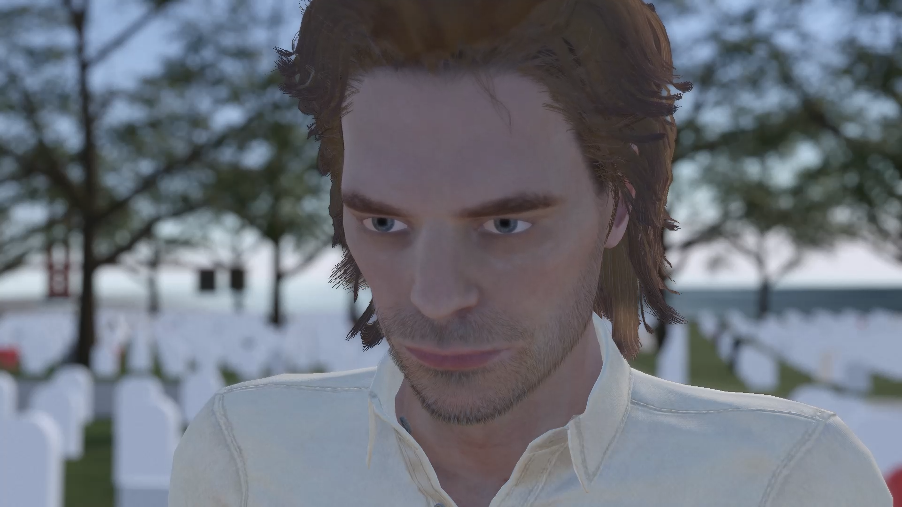

Focused on mastering polygonal character modeling inside Autodesk Maya, prioritizing clean sub-D topology, sharp profiles, and expressive proportions. This showcase features a high-fidelity Baby Groot character model built entirely through structural poly-modeling and extrusion workflows. The project served as a foundational study in translating detailed concept art into optimized, clean mesh hierarchies suitable for production.
Utilized industry-standard character platforms like Character Creator (CC) to deploy fully rigged, production-ready human actors. The technical task focused on cross-platform data pipeline management—exporting complex mesh hierarchies, baked materials, and native skeletal rigs from CC, and successfully importing them into Maya while maintaining high-fidelity material lookdev.
To streamline the MoCap retargeting pipeline for Ocean of Memories, I engineered two distinct Python tools for Maya to resolve integration mismatches between Character Creator (CC) and Rokoko. The first tool automates facial animation setup by instantly batch-renaming CC blendshapes to match the Rokoko ARKit 52 standard upon object selection. The second tool solves structural animation translation issues; it programmatically links blendshape values to the lower_jaw and eye joints to fix static pupil and jaw animations, allowing manual numeric calibration before baking the final engine-ready keyframes.